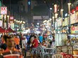
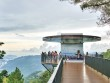
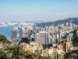
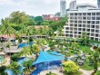
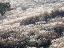
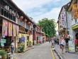
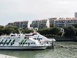
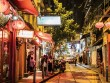

"힐링"을 위해 떠나는 자유여행
여행 어디로 떠날지 고민되시나요?
여행을 고민하고 계신 여러분들을 위하여 여러가지 소식을 전해드립니다.
자유 여행사
-

- 쿠알라룸푸르, 메트로 원데이 투어 - Land of Variety,...2017년12월
- 쿠알라룸푸르는 전철 노선이 잘 갖춰져 있어 주요 관광지가 있는 노선과 역 이름만 알아도 편하게 돌아볼 수 있다. LRT와 KL 모노레일 정도만 외워도 원데이 투어를 가뿐하게 ...
- 에이비로드 | 여행/맛집
-

- 페낭의 맛 6 - Land of Variety, 말레이시아 페낭2017년12월
- 페낭은 말레이시아 내에서도 ‘맛의 도시’로 유명하다. 말레이계, 중국계, 인도계, 뇨냐 음식 등 종류가 다양한 건 물론, 비교적 강한 향신료를 많이 쓰지 않아 관광객도 부담 ...
- 에이비로드 | 여행/맛집
-

- 페낭의 힐링 스폿 - Land of Variety, 말레이시아 페낭2017년12월
- 페낭을 한마디로 정의하기란 쉽지 않다. 유네스코 세계문화유산으로 등재된 조지타운을 둘러보면 서로 다름을 인정하며 살아가는 것이 어떤 의미인지 조금은 이해하게 되고, 페낭의 산...
- 에이비로드 | 여행/맛집
-

- 겨울에 더 즐거운 홍콩 - 홍콩, 겨울을 즐기는 4가지 방법2017년12월
- 전반적으로 기온이 높고 습기가 많은 홍콩의 날씨. 여름에는 평균 31°C까지 오르고, 5~11월에는 비가 많이 내려 야외 활동이 쉽지 않다. 하지만 12~3월에는 12~20°...
- 에이비로드 | 여행/맛집
-
- 침사추이의 두 가지 밤 - 홍콩, 겨울을 즐기는 4가지 방법2017년12월
- 낮에는 수많은 페리가 오가는 교통의 중심지이자 호텔과 쇼핑센터가 가득한 관광지지만 진짜 매력은 밤에 발산된다. 해안선을 따라 늘어선 고층 빌딩이 백만 불짜리 야경을 선사하고,...
- 에이비로드 | 여행/맛집
-

- 에디터 추천 호텔 2 - Land of Variety, 말레이시...2017년12월
- 바투페링기 지역에 숙소를 잡으면. 해변에서 액티비티를 즐긴 뒤돌아오기에 편하고, 조지타운이나 거니 드라이브 같은 시내를 돌아보기도 좋다. 바투페링기 근처 숙소 두 곳을 추천한다.
- 에이비로드 | 여행/맛집
-

- 함께 흔들리는 저 평전의 억새처럼, 경남 합천 황매산 - 그곳에 가...2017년12월
- 강원도 원산에서 기지개를 켠 산줄기는 동해안을 따라 힘차게 내닫는다. 금강산, 설악산, 오대산, 태백산 지나 한참을 내달려오던 기세는 경남 합천에 이르러서야 잦아든다.
- 샘터 | 여행/맛집
-

- 조지타운 워킹투어 - Land of Variety, 말레이시아 페낭2017년12월
- 페낭을 한마디로 정의하기란 쉽지 않다. 유네스코 세계문화유산으로 등재된 조지타운을 둘러보면 서로 다름을 인정하며 살아가는 것이 어떤 의미인지 조금은 이해하게 되고, 페낭의 산...
- 에이비로드 | 여행/맛집
-

- 홍콩 속 유럽, 디스커버리베이 - 홍콩, 겨울을 즐기는 4가지 방법2017년12월
- 홍콩의 겨울 바다는 유럽의 작은 해안 마을을 닮았다. 특히 홍콩 섬 왼편에 자리한 란타우섬의 디스커버리베이는 더욱 그렇다. 스페인풍으로 포장된 길과 오렌지색 지붕의 건물들, ...
- 에이비로드 | 여행/맛집
-

- 올드타운 센트럴 산책 - 홍콩, 겨울을 즐기는 4가지 방법2017년12월
- 사계절 언제 가도 좋은 홍콩. 그중에서도 가장 매력적인 계절은 겨울이다. 12월부터 본격적으로 환상적인 날씨가 시작되는 것. 홍콩의 겨울은 평균 12~20°C로 우리나라의 가...
- 에이비로드 | 여행/맛집